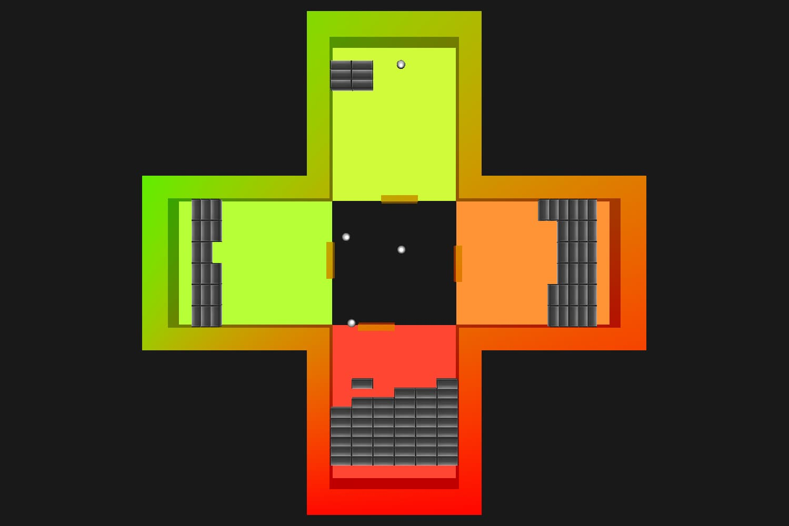

Project Description
My inspiration for this project was the classic brick breaker game. I wanted to make a much more difficult, much more complex version of the game that would make it more challenging and more fun to play. I decided that playing four brick breaker games at once, one in each cardinal direction, was a good way to accomplish this goal without making it overly confusing.
The game begins with 5 rows of bricks in each "court". A ball is then put into motion in the top court. After about 10 seconds, a ball is added to the left court. About 10 seconds later, a ball is added to the bottom court, and then the right court.
Periodically, the game undergoes what I call a "spawn interval". A spawn interval happens about once every 10 second initially, but the spawn rate increases as the game goes on. When a spawn interval occurs, a row of bricks is added to each court that does not contain a ball. However, bricks will not be spawned if the ball for that court has not spawned yet. For example, a spawn interval 20 seconds into the game will not spawn bricks in the right court because a ball has not spawned into the right side yet.
The goal of the game is to keep one ball active in each court at all times, and to clear the bricks in each court. If you clear all the bricks on all four courts, you win. However, remember that bricks will start spawning if there are any courts that are missing balls! The game ends in a loss if bricks on any court reach that court's paddle.
To see the game in action, click here
Controls:
- Arrow Keys: Select a paddle to move
- WASD: Move the selected paddle
 Once all 4 balls have spawned
Concepts Used
- Matrix Transformations
- Textures
- Diffused and Specular Lighting
- Collisions
- Sound Effects (with Windows)